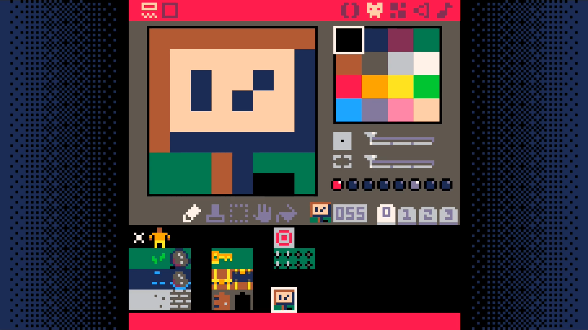
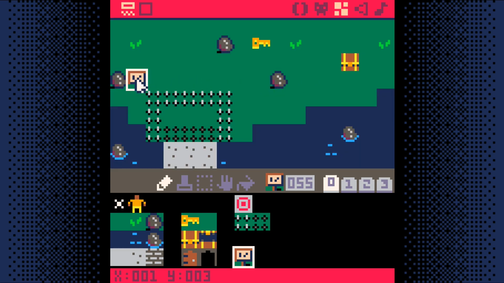
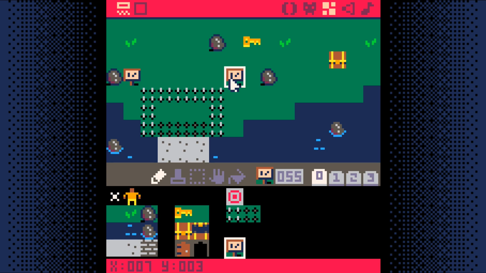
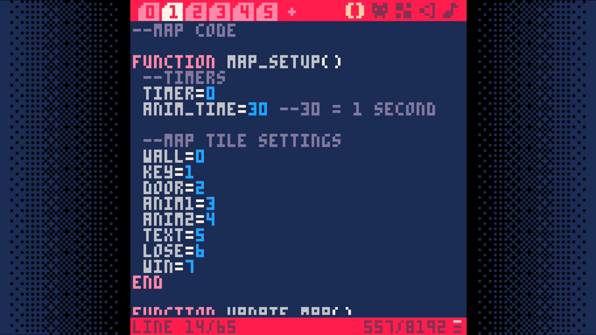
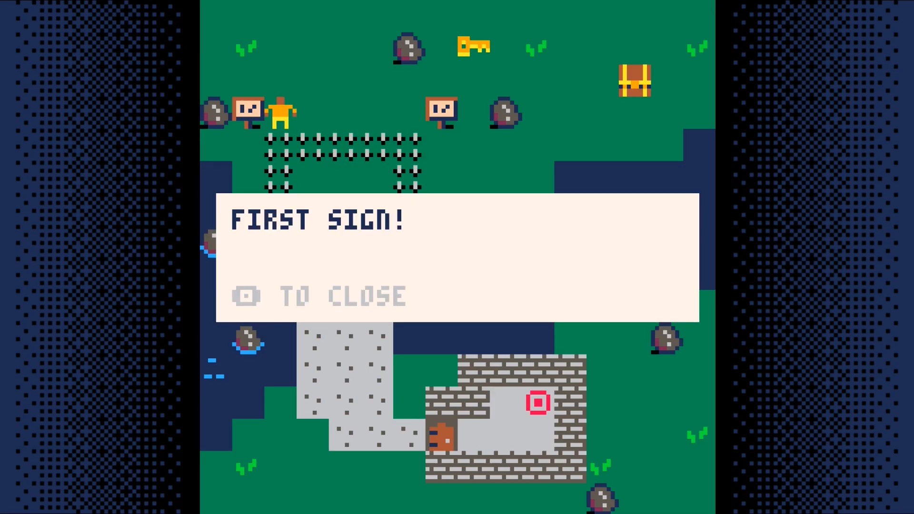
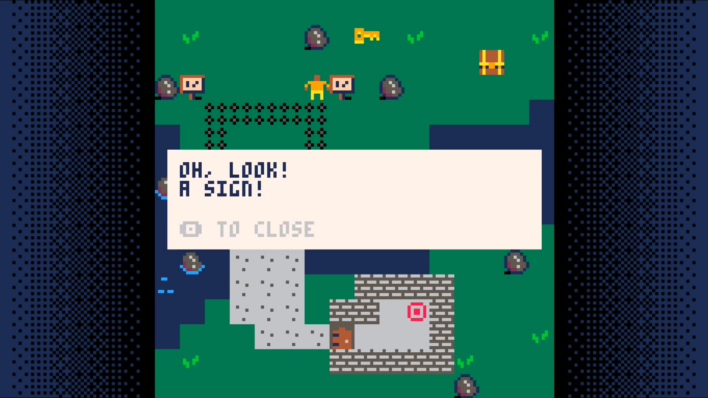

Bonus Step: Adding Text
This step will be a bit more involved than the previous steps. If you have made it to this step, you will definitely be able to complete it. Just take it slow and don't rush.
Create a sign sprite.

Place two of them. If you don't place them at x=1,y=3 and x=7,y=3 you will need to update the code to reflect where the signs are placed in your world.


Add text=5 to the tile settings in map_setup. We are going to use this
to trigger the display of text to the user.

Now, let's add some code to make use of this tile type.
In tab 0, add a call to text_setup
function _init()
map_setup()
text_setup()
make_player()
Modify the _update call to only update the game state if there is no active text displayed.
function _update()
if (not game_over) then
if (not active_text) then
update_map()
move_player()
check_win_lose()
end
In _draw, call draw_text after drawing the map and the player.
function _draw()
cls()
if (not game_over) then
draw_map()
draw_player()
draw_text()
In the player interaction code, tab 2, add a check for the text tile type.
function interact(x,y)
if (is_tile(text,x,y)) then
active_text=get_text(x,y)
end
Add a new tab. This will be tab 6. We will put the text related code here.
--text code
function text_setup()
texts={}
add_text(1,3,"first sign!")
add_text(7,3,"oh, look!\na sign!")
end
function add_text(x,y,message)
texts[x+y*128]=message
end
function get_text(x,y)
return texts[x+y*128]
end
function draw_text()
if (active_text) then
textx=mapx*8+4
texty=mapy*8+48
rectfill(textx,texty,textx+119,texty+31,7)
print(active_text,textx+4,texty+4,1)
print("_ to close",textx+4,texty+23,6)
end
if (btnp(_)) active_text=nil
end
Save your game and run it. With any luck, you should be able to walk up to and read each sign.


This opens up a world of possibilities. It allows to add Non-Player Characters (NPCs) that can speak with your character. Signs can provide instructions or warnings. You are able to tell your character's back story through dialog or notes or other narrative devices.